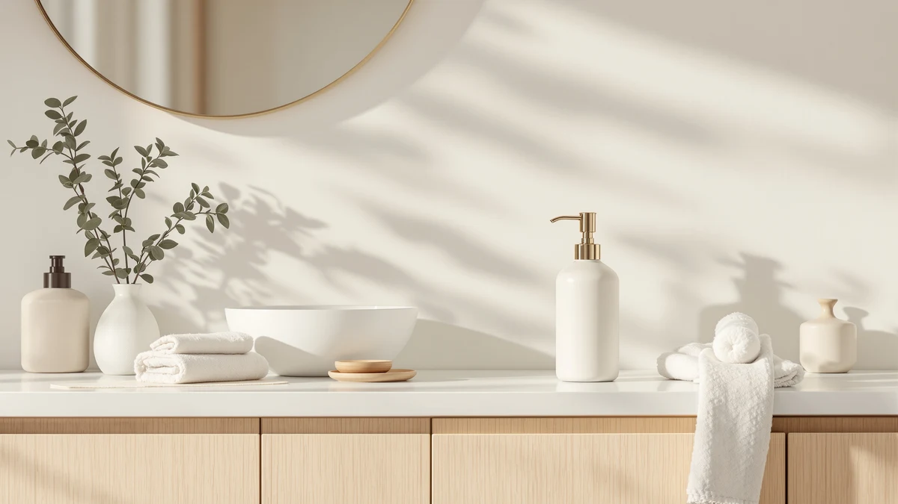

The Best Commercial Soap Dispensers of 2026: Wall-Mount Picks for Offices & Restrooms
Prices and picks verified as of August 2026. Independent, reader-supported reviews.


Quick Answer
The best commercial soap dispensers for most offices and restrooms are the simplehuman Triple Wall Mount Pumps, which combine soap, lotion, and sanitizer into one $99.99 wall-mounted unit. If you need a single budget-friendly pump instead, the VANNSOO Commercial Soap Dispenser Wall covers the basics for $24.99.
Our pick: simplehuman Triple Wall Mount Pumps, $99.99 Check Price on Amazon
Bottom line: our top pick is the simplehuman Triple Wall Mount Pumps at $99.99. The best budget option is the Evhome Manual Soap Dispenser Kitchen Bathroom Wall Mounted at $16.89.
Things to Know Before You Buy
- Our pick among the best commercial soap dispensers we compared is the simplehuman Triple Wall Mount Pumps ($99.99). Its three-chamber design covers soap, lotion, and sanitizer with one wall-mounted unit instead of three separate bottles.
- Price spans a wide range in this category, from the Evhome's $16.89 manual pump to the simplehuman's $99.99 triple-chamber system, so match the spend to how many people actually use the space.
- All six dispensers use an ABS plastic body, the standard material for commercial fixtures because it resists the soap film, moisture, and daily wear a restroom or break room puts on a unit.
- Mounting style varies: the VANNSOO and the Hushee four-pack bolt to the wall, while the Evhome sits on a counter, so check clearance before ordering for a stall with limited space.
- If you're outfitting more than one restroom, the Hushee comes as a four-pack, which works out cheaper per unit than buying four single dispensers separately.
The best commercial soap dispensers hold up to dozens of hands a day without clogging, running dry, or looking cheap after a few months on a restroom wall. Offices, restaurants, and shared bathrooms put more strain on a dispenser than a single kitchen sink ever will, so a unit that works fine at home can fail fast once a whole floor of people start using it. We compared six dispensers built for that kind of traffic, from wall-mount pump systems to a touch-free unit borrowed straight from the public-restroom playbook.
Our pick for most facilities is the simplehuman Triple Wall Mount Pumps. At $99.99, it mounts three separate chambers side by side, so one unit can hold soap, lotion, and hand sanitizer without cluttering a counter with three different bottles. It costs more than a single dispenser, but a property manager replacing multiple stand-alone pumps often spends close to that anyway, just spread across separate purchases.
Not every restroom needs three chambers, so this guide also covers a wall-mount budget option, a touch-free foam dispenser from GOJO, one of the most recognized names in commercial handwashing, and a multi-pack for buildings with several stalls to outfit at once. Every price, material, and dimension below comes from the current Amazon listing for that product, not a manufacturer press release.
Why You Should Trust Us
Ilane Tall covers kitchen and bathroom fixtures for Best Soap Dispensers, and this guide to the best commercial soap dispensers focuses on units built for higher-traffic settings like offices, restaurants, and shared restrooms rather than a single home sink. We researched each dispenser using its current Amazon listing, comparing stated capacity, mounting hardware, and body material against verified buyer reviews to spot the complaints that show up again and again, not the one-off ones. Every price and spec cited below reflects the listing at the time of publishing, and we flag it directly whenever a manufacturer claim is not something reviewers can independently confirm.
How We Picked
We started from a wider list of dispensers marketed toward offices, restaurants, and property managers, then narrowed it using three criteria: a body material rated for repeated daily use, a mounting or refill design that works for shared spaces rather than a single household, and a review pattern free of frequent complaints about leaking, clogging, or seals failing early. We also made sure the lineup covered more than one price tier and more than one mounting style, since a five-stall restroom and a single break room counter don't need the same dispenser. That left six commercial soap dispensers ranging from $16.89 to $99.99, each suited to a different scale of use.
How We Compared
For each commercial soap dispenser, we compared stated reservoir size against how many people a facility manager would realistically expect to wash up between refills, since a 17-ounce tank in a busy restroom empties faster than the same tank in a quiet break room. We weighed price against chamber count, since a $99.99 triple-chamber unit like the simplehuman needs to replace at least two single dispensers to justify the premium. We also cross-referenced verified owner reviews for each product against the manufacturer's material and capacity claims, and we note below anywhere reviewers flagged a discrepancy, such as a pump mechanism that felt less durable than the listing suggested.
Our Picks

simplehuman Triple Wall Mount Pumps
What we like
- Three separate chambers cover soap, lotion, and sanitizer without mounting three different bottles
- ABS plastic body matches the durability commercial fixtures need for daily handling
- One wall-mount footprint replaces the clutter of several stand-alone pumps on a counter
- Matching chamber design gives a restroom or break room a uniform look
Flaws but not dealbreakers
- At $99.99, it costs roughly four to six times more than a single wall-mount pump on this list
- Refilling three chambers takes longer than topping off one dispenser
| Material | ABS plastic |
| Size | Triple |
The simplehuman Triple Wall Mount Pumps is the pick we'd install in a busy office, restaurant restroom, or shared bathroom that needs more than one product on hand at all times. Instead of mounting three separate dispensers, one for soap, one for lotion, and one for hand sanitizer, the triple pump combines all three into a single wall-mounted unit with matching chambers, at $99.99. For a facility that currently juggles three mismatched bottles lined up on a counter, this consolidates them into one fixture that looks intentional instead of improvised.
That $99.99 price sits well above the other dispensers in this lineup, but it's worth comparing against the cost of buying three separate pumps rather than against a single dispenser's price tag, since it does the job of three. The ABS plastic body holds up to the same daily handling as the cheaper single-chamber picks here, and each of the three pumps operates independently, so one chamber running low doesn't affect the other two. Owners report the pump mechanism stays smooth even after months of repeated use, though refilling three reservoirs at once naturally takes longer than topping off a single dispenser, and a break room that only needs to offer soap will get more value from a cheaper single-chamber unit instead.

VANNSOO Commercial Soap Dispenser Wall
What we like
- At $24.99, it costs a fraction of the triple-chamber picks in this lineup
- 17-fluid-ounce reservoir holds enough soap for a moderate-traffic restroom between refills
- Wall mount keeps the counter clear, useful in stalls with limited space
Flaws but not dealbreakers
- Single chamber only, so facilities needing soap and sanitizer together will need a second unit
- 17 ounces empties faster than the larger-capacity picks in a high-traffic restroom
| Material | ABS plastic |
| Size | 17 fl oz |
The VANNSOO Commercial Soap Dispenser Wall is the straightforward option in this lineup: one wall-mounted pump, one 17-fluid-ounce reservoir, and a $24.99 price that undercuts nearly everything else here except the Evhome. It's built for a property manager who needs to outfit a restroom or break room with a reliable dispenser without paying for chambers or features that particular space doesn't need.
The 17-ounce tank is a middle-of-the-road capacity for this category, big enough to go a week or more between refills in a moderate-traffic restroom, though a high-traffic space like a restaurant or gym will empty it faster than the larger-capacity picks on this list. Reviewers consistently note the wall mount holds securely once installed, and the ABS plastic body handles the moisture and splashing typical of a restroom wall without discoloring. Because it's a single chamber, a facility that wants soap and hand sanitizer available side by side will need to mount two of these rather than relying on one dispenser to do both jobs.

Better Living Aviva Shower Dispenser
What we like
- Three chambers cover shampoo, conditioner, and body wash in one shower-mounted unit
- ABS plastic body is built to handle constant water exposure, unlike dispensers meant for a dry counter
- Locks onto the wall, so it won't slide or fall the way a suction-cup dispenser can
Flaws but not dealbreakers
- At $52.64, it costs more than twice the VANNSOO's single-chamber price
- Designed for shower use, so it's not the right fit for a standard restroom sink setup
| Material | ABS plastic |
| Size | 3-Chamber |
The Better Living Aviva Shower Dispenser fills a different role than the other picks in this lineup. Where the simplehuman and VANNSOO mount over a sink, the Aviva is built specifically for a shower wall, with three chambers meant for shampoo, conditioner, and body wash rather than hand soap. At $52.64, it's aimed at gyms, hotels, hostels, and shared locker rooms that need to stock a shower stall rather than a restroom counter.
Because it's rated for constant water exposure, the ABS plastic body and the wall-lock mounting system are built differently than a countertop or sink-side pump, and reviewers consistently note it stays securely attached even under regular use, unlike a suction-cup caddy that can slip loose over time. The tradeoff is that it's a specialized fixture: a property that only needs a hand-soap dispenser at a sink won't get any use out of the shower-specific design, and the $52.64 price only makes sense if a shower stall is actually part of what needs outfitting.

GOJO LTX-12 Touch-Free Foam Hand
What we like
- Touch-free operation cuts down on the cross-contamination a manual pump handle can spread
- Foam soap uses less product per pump than a liquid dispenser, stretching a refill further
- GOJO is the brand most public restrooms already use, so replacement refills are easy to source
Flaws but not dealbreakers
- Runs on batteries, which need periodic replacement to keep the sensor working
- At $20.69, it's priced for a single dispenser, so outfitting several stalls adds up fast
| Material | ABS plastic |
| Size | 1 Count (Pack of 1) |
The GOJO LTX-12 Touch-Free Foam Hand dispenser is the pick for anyone who wants a restroom that feels like it belongs in an office building or restaurant rather than a house. GOJO is the name behind a large share of the touch-free dispensers already installed in public restrooms across the US, and the LTX-12 brings that same foam-based, sensor-driven mechanism to a $20.69 unit.
Touch-free operation matters more in a commercial setting than a home one, since a restroom shared by dozens of people a day accumulates far more contact on a manual pump handle than a household sink does. Foam soap also uses less product per pump than a liquid dispenser, so a single refill goes further across a high-traffic space. Owners report the sensor responds reliably once installed, though it runs on batteries that need periodic replacement, an added maintenance step a manual pump doesn't require. At $20.69 for a single unit, outfitting a multi-stall restroom with these commercial soap dispensers means budgeting for several.

Hushee 4 Pcs Plastic Wall
What we like
- Comes as a four-pack, which works out cheaper per unit than buying four single dispensers
- 1000-milliliter reservoir is among the largest capacities in this lineup
- Wall mount keeps all four units consistent across multiple stalls or sinks
Flaws but not dealbreakers
- $37.99 buys four dispensers, so a single-stall restroom pays for capacity it doesn't need
- Larger reservoir takes longer to empty, so check for buildup periodically between deep cleanings
| Material | ABS plastic |
| Size | 33.8 oz 1000 ml |
The Hushee 4 Pcs Plastic Wall dispenser solves a different problem than the rest of this lineup: outfitting more than one sink at once. At $37.99 for four wall-mounted units, each with a 33.8-ounce, 1000-milliliter reservoir, it's built for a building with multiple restroom stalls, a break room and a restroom, or any setup that needs several matching commercial soap dispensers rather than one.
Priced per unit, the four-pack works out to under $10 a dispenser, cheaper than any single-unit pick in this guide, and the 1000-milliliter capacity is among the largest here, useful for a stall that sees heavy daily traffic. The ABS plastic body and wall mount match the build quality of the single-unit competitors, so buyers aren't trading durability for the lower per-unit cost. The tradeoff runs the other direction: a single-sink break room only needs one dispenser, and buying a four-pack for that space means paying for three units that go unused.

Evhome Manual Soap Dispenser Kitchen
What we like
- At $16.89, it's the least expensive dispenser in this lineup
- Manual pump means no batteries or sensor to maintain
- Compact 4.5 by 4.5 by 7.9-inch footprint fits a small break room counter
Flaws but not dealbreakers
- No touch-free option, so it doesn't cut down on handle contact the way the GOJO does
- Single chamber and smaller footprint than the multi-pack or triple-chamber picks
| Material | ABS plastic |
| Size | 4.5 inches x 4.5 inches x 7.9 inches |
The Evhome Manual Soap Dispenser Kitchen is the budget entry point in this guide, at $16.89 for a single manual pump. It skips touch-free sensors and multiple chambers in favor of a simple mechanism, a 4.5 by 4.5 by 7.9-inch footprint, and the lowest price of any commercial soap dispenser we compared for this roundup.
A manual pump means there's no battery to replace and no sensor to recalibrate, which makes it a reasonable choice for a small break room or single-sink kitchen where touch-free operation matters less than in a public restroom. Reviewers consistently note the pump action stays smooth without sticking, a common complaint on cheaper manual dispensers. The obvious tradeoff is that it lacks the touch-free operation the GOJO offers and the multi-chamber flexibility of the simplehuman, so it fits a lower-traffic space better than a busy commercial restroom.
Quick Comparison
| Product | Material | Price | Rating | Best for | Get it |
|---|---|---|---|---|---|
| simplehuman Triple Wall Mount Pumps | ABS plastic | $99.99 | 4 | Multi-product offices and restrooms | View on Amazon → |
| VANNSOO Commercial Soap Dispenser Wall | ABS plastic | $24.99 | 4 | Budget wall-mount restrooms | View on Amazon → |
| Better Living Aviva Shower Dispenser | ABS plastic | $52.64 | 4 | Shared showers and locker rooms | View on Amazon → |
| GOJO LTX-12 Touch-Free Foam Hand | ABS plastic | $20.69 | 4 | Touch-free public restrooms | View on Amazon → |
| Hushee 4 Pcs Plastic Wall | ABS plastic | $37.99 | 4 | Multi-stall buildings | View on Amazon → |
| Evhome Manual Soap Dispenser Kitchen | ABS plastic | $16.89 | 4 | Small break rooms and kitchens | View on Amazon → |
The Competition
We looked at several other dispensers marketed among the best commercial soap dispensers before narrowing this list to six. A number of listings claimed commercial-grade durability without any wall-mount hardware included, which we ruled out since a facility replacing multiple sink-side pumps needs a design built for repeated daily use, not a consumer bottle relabeled for a business audience. A few touch-free models had review patterns pointing to sensors that stopped responding within the first few months, a failure mode that costs more in replacement units than it saves in convenience.
Among the picks that made the cut, the Better Living Aviva and the Hushee four-pack solve narrower problems, a shower stall and a multi-sink building, rather than competing directly with the simplehuman or the GOJO for a single restroom sink. The VANNSOO and the Evhome compete closely on price and simplicity, and neither pulls far enough ahead of the other to be the default choice; the VANNSOO's wall mount suits a fixed restroom setup, while the Evhome's countertop design fits a smaller break room better.
If you're comparing the best commercial soap dispensers for a specific facility, the simplehuman Triple Wall Mount Pumps remains our overall pick for spaces that need more than one product on hand, while the GOJO LTX-12 is the better fit for a restroom that specifically wants touch-free operation.
Frequently Asked Questions
What makes a soap dispenser suitable for commercial use?
A commercial soap dispenser needs a body material that resists constant moisture and handling, a mounting or refill system built for higher traffic than a single home sink sees, and a review history free of frequent leaking or clogging complaints. All six picks in this guide use an ABS plastic body for that reason, and most offer wall-mount hardware instead of relying on a countertop footprint alone.
Should I choose a touch-free or manual soap dispenser for a restroom?
Touch-free dispensers like the GOJO LTX-12 cut down on the handle contact a manual pump accumulates across dozens of daily users, which matters more in a public or office restroom than in a single household bathroom. The tradeoff is battery maintenance. A manual pump like the Evhome needs no batteries but does require every user to touch the handle.
How many soap dispensers does a multi-stall restroom need?
That depends on the number of sinks, but a four-pack like the Hushee Plastic Wall dispenser usually costs less per unit than buying single dispensers separately, and it keeps the fixtures consistent across every stall. For a restroom with just one or two sinks, a single wall-mount pump such as the VANNSOO is typically enough.